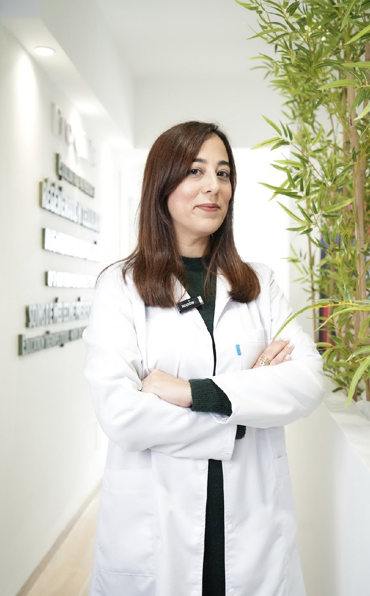
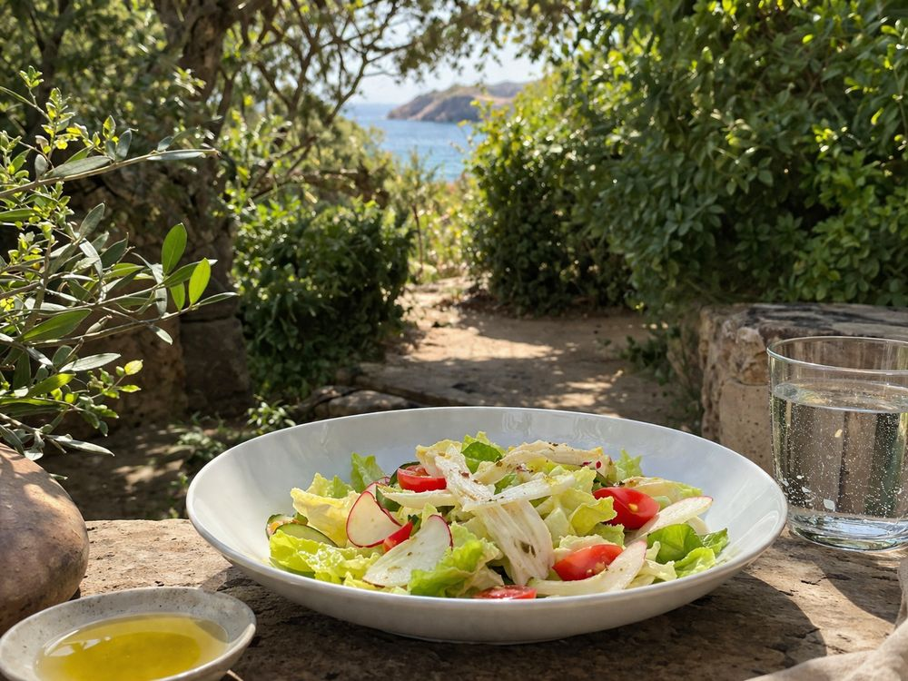
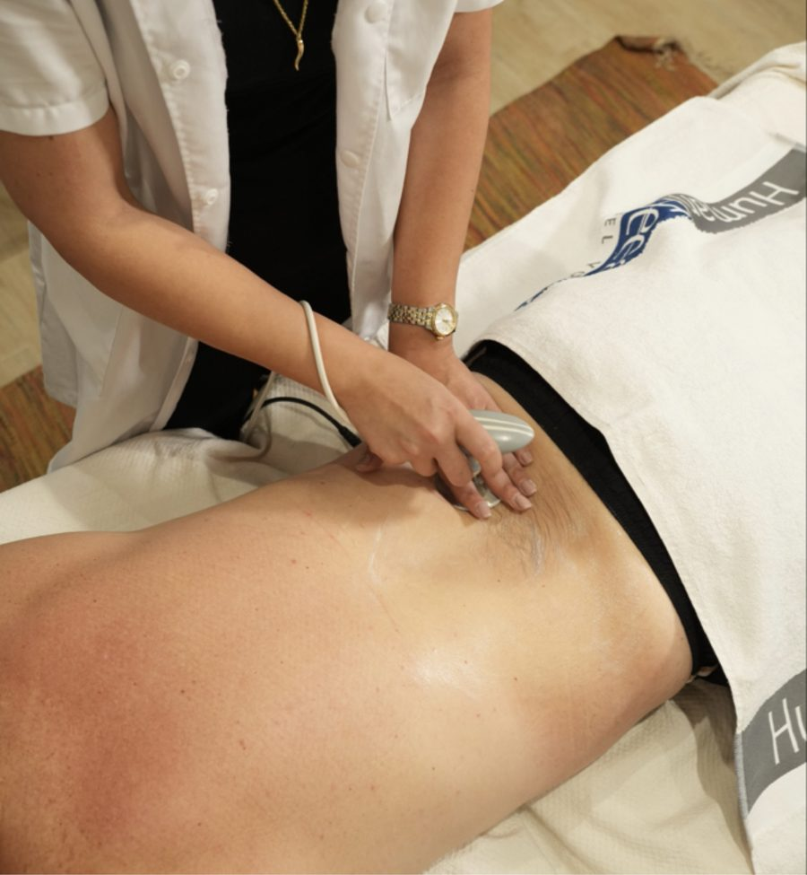
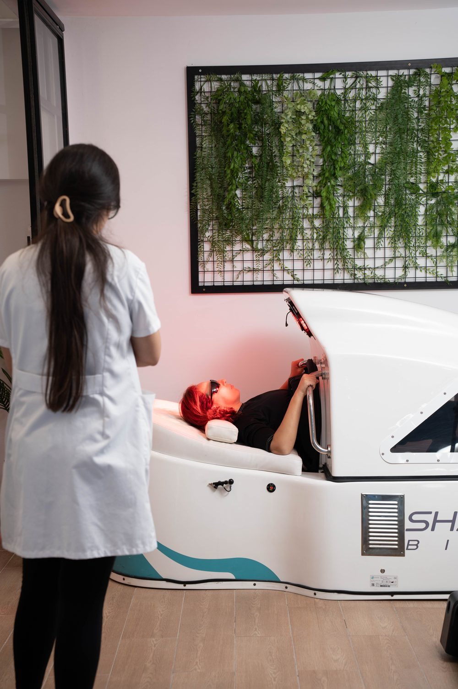
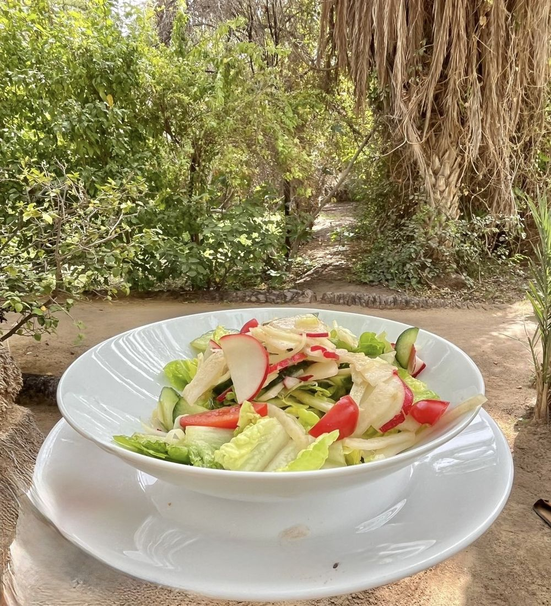
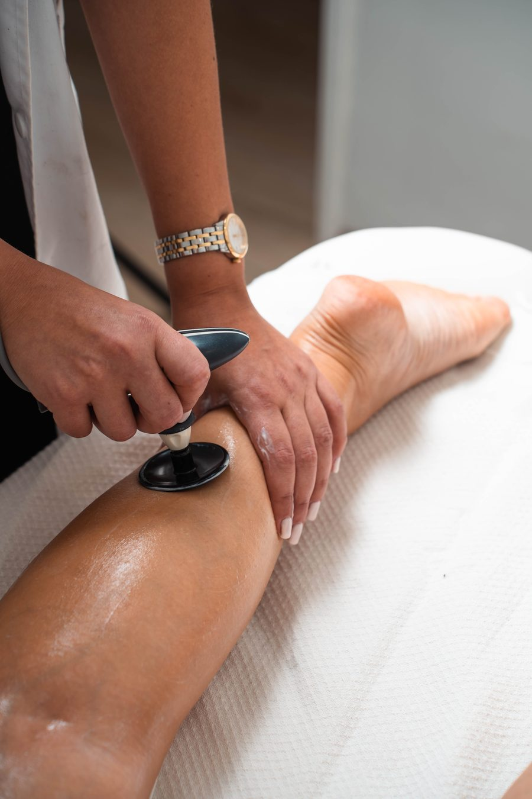
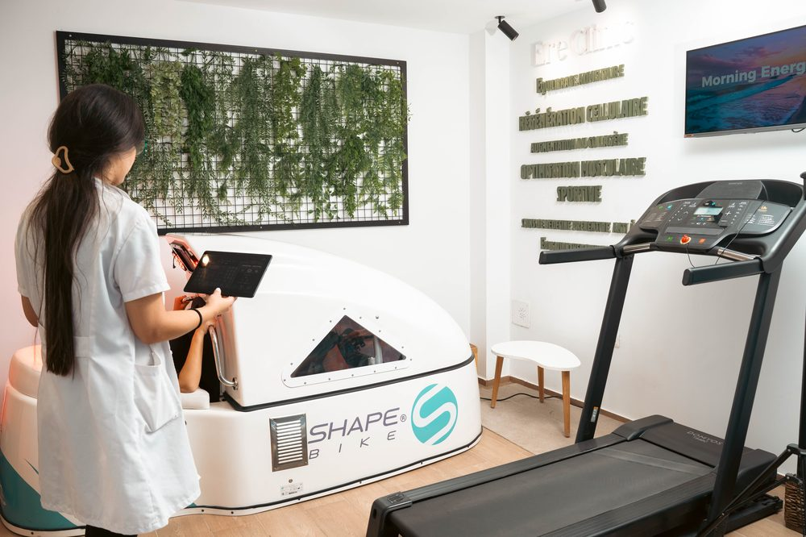

« Je ne compte pas tes calories. Je décode ta composition et ta biologie. »
— Dr Safa Doghri
Une approche médicale non invasive, inspirée de la diète méditerranéenne, pour restaurer durablement votre santé métabolique.

Si vous vous battez contre votre poids depuis des années malgré vos efforts, votre problème n'est pas votre volonté — c'est votre biologie.
Fatigue persistante · Prise de poids résistante · Équilibre introuvable
Inspirée de la diète méditerranéenne, médicalement fondée. Une méthode propriétaire qui traite les causes — pas les symptômes.

Alimentation méditerranéenne personnalisée selon votre profil biologique.

Technologies non invasives : Tecar, sauna, drainage lymphatique, renforcement musculaire.

Transfert de compétences au patient. L'objectif : votre autonomie à long terme.
Un score composite pour savoir exactement où vous en êtes métaboliquement. Estimez votre profil en 5 questions.
Score illustratif
Relancer et rééquilibrer votre métabolisme en profondeur.
Réduire l'inflammation et améliorer la circulation lymphatique.
Prévention, optimisation globale et anti-âge métabolique.
«L’expérience était unique. La prise en charge personnalisée. J’ai pu perdre 10 kgs avec un changement profond de ma silhouette, je suis ravie !»
«L’accueil, les soins, les explications du docteur, tout était excellent. Un service premium et une méthode efficace. Suivre mon score m’a permis de garder la motivation.»
«J’ai essayé plusieurs régimes sans résultat. Grâce au programme de Dr Doghri j’ai retrouvé mon énergie, dépassé la ménopause, mon corps et mon mental vont mieux. La vision longévité et régulation métabolique m’a beaucoup apporté.»
«Ere Clinic est un super centre ! Inscrite depuis plus de 10 mois, je suis ravie de mon expérience. L’ambiance est motivante et bienveillante, avec une prise en charge personnalisée et sur mesure. Médecin et kiné sont super pros, disponibles, aux petits soins. Je recommande vivement !»
«Après 6 mois de perte de poids… un coup de mou, et puis le déclic grâce à la cure Shape qui a fait toute la différence. Elle m'a permis de maintenir mon rythme sportif, mais surtout d'en ressortir plus fort tant mentalement que physiquement. Je recommande à 100% !»
Demandez un rendez-vous avec le Dr Safa Doghri pour commencer votre bilan Ere.
Méthode ERE développée par Dr Safa Doghri. Ni régime. Ni nutrition classique. Une médecine qui traite les mécanismes — pas les symptômes.
On traite le poids, pas ce qui le génère.
Chaque patient a une biologie unique. Les prescriptions universelles ne fonctionnent pas.
Sans traitement des mécanismes profonds, les résultats ne durent pas.

Alimentation méditerranéenne personnalisée au profil biologique.

Technologies non invasives : Tecar, drainage, sauna, renforcement musculaire.

Le patient comprend son métabolisme et apprend à l'entretenir.
Évaluation biologique complète.
Construit sur vos biomarqueurs.
Réévaluations et ajustements continus.
Score Ere, biomarqueurs, composition — tout est suivi.
Demandez un rendez-vous et commencez par votre bilan Ere.
Un score composite pour objectiver votre état métabolique et personnaliser votre prise en charge.
Le ERE Healthspan Score est un outil médical développé par Dr Safa Doghri pour évaluer la santé métabolique de manière globale. Contrairement aux bilans classiques, il ne se limite pas aux analyses sanguines : il combine la biologie, la composition corporelle, la fonction musculaire et surtout l’évolution dans le temps.
Son objectif est clair : détecter tôt les déséquilibres, mesurer les vrais progrès et adapter les stratégies de manière personnalisée. C’est une approche intégrée, plus proche de la réalité du corps que des indicateurs isolés.
16 biomarqueurs. Évaluation InBody. Force de préhension. Bilan réalisé lors de la première consultation.
Chaque programme commence par votre Score ERE Healthspan Score et est entièrement personnalisé.
Pour les patients en surpoids, fatigue chronique ou résistance métabolique.
Pour les patients souffrant d'inflammation chronique, rétention, jambes lourdes.
Optimisation globale et investissement dans la longévité.
Demandez un rendez-vous pour en discuter avec le Dr Safa Doghri.
Nous traitons les mécanismes métaboliques profonds — pas uniquement les symptômes.
La médecine métabolique s'intéresse aux mécanismes biologiques qui gouvernent l'énergie, le poids, l'inflammation et la longévité.
Chaque protocole est fondé sur des biomarqueurs mesurables. Pas d'intuition — des données. Pas de généralités — votre biologie.
Réévaluations régulières du Score Ere, ajustements du protocole, accompagnement à chaque étape.
Tecar, drainage lymphatique, sauna thérapeutique, renforcement musculaire. Sans chirurgie, sans effets secondaires.
Fondatrice de la Méthode ERE et du ERE Healthspan Score.
Médecin spécialiste en médecine métabolique — diabète, obésité, nutrition, rééquilibrage alimentaire et longévité.
« Je ne compte pas tes calories. Je décode ta composition et ta biologie. »
Contactez-nous ou demandez votre première consultation.
Première consultation, bilan ERE Healthspan Score, ou simple question — nous répondons sous 24h.
Dites-nous en quelques mots ce que vous traversez.
Remplissez le formulaire ou contactez-nous via WhatsApp. L’équipe vous rappelle pour fixer le créneau adapté à votre bilan.
WhatsAppEre Clinic est ouverte aux collaborations médicales et partenariats institutionnels.
Professionnels de santé, structures médicales, marques, projets de longévité ou investisseurs : présentez votre demande pour une collaboration cohérente avec la vision ERE Clinic.
Ere Clinic — Centre Méditerranéen de Médecine Métabolique & Longévité, La Marsa, Tunisie.
Fondatrice : Dr Safa Doghri. Téléphone : +216 25 595 969.
Les informations présentes sur ce site sont fournies à titre informatif et ne remplacent pas une consultation médicale personnalisée.
Les informations transmises via le formulaire de contact sont utilisées uniquement pour répondre aux demandes de rendez-vous, d'information ou de collaboration.
Aucune donnée médicale ne doit être transmise via le formulaire sans échange préalable avec l'équipe médicale.
La Méthode ERE et le ERE Healthspan Score sont présentés comme des outils propriétaires développés par Dr Safa Doghri dans le cadre d'Ere Clinic.
Toute reproduction des textes, visuels, protocoles, noms ou éléments de marque du site nécessite une autorisation préalable.